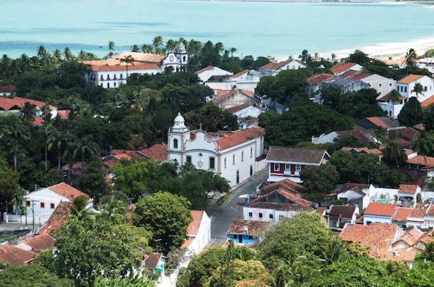
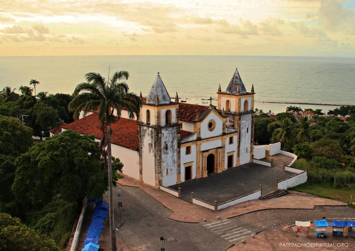
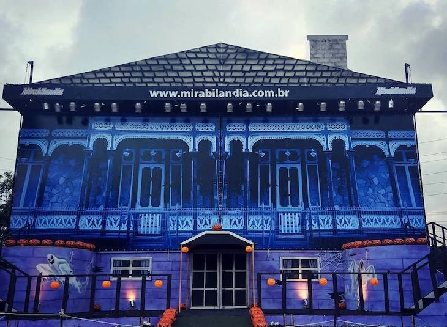
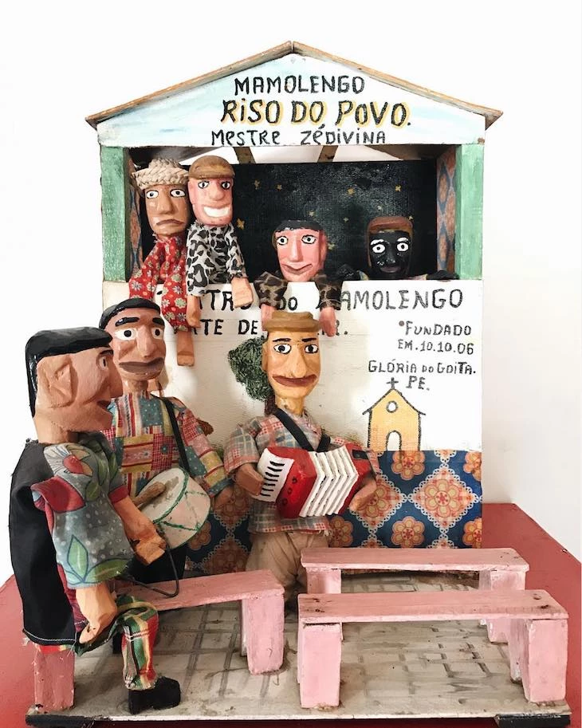

Centro histórico de Olinda
Conhecido como Cidade Alta, o centro histórico de Olinda é onde se concentra as principais ladeiras da cidade, com todas aquelas casinhas coloridas, igrejas históricas e muitas lojas de artesanatos locais, ótimas para comprar lembrancinhas para toda a família. Prepare-se para tirar as melhores fotos de sua viagem por lá!
Alto da Sé
No ponto mais alto do centro histórico fica o mirante do Alto da Sé, onde o visitante terá uma bela vista de 360 graus de Olinda e também da orla de Recife. Além deste privilégio, há também diversas lojas, lanchonetes e barraquinhas vendendo acarajés e tapiocas.
Mirabilandia
Mirabilandia é um parque temático com diversão garantida para toda a família! Entre as atrações mais populares estão suas montanhas-russas, brinquedos giratórios e a área dedicada às crianças. Saiba mais sobre o estabelecimento clicando aqui.
Museu do Mamulengo
Neste museu, você conhecerá a origem do mamulengo, um típico fantoche pernambucano, muito popular na cultura nordestina, e também diversas peças expostas pelo edifício. O horário de funcionamento é de segunda a sexta de 9h30 às 17h, e a entrada custa R$2.